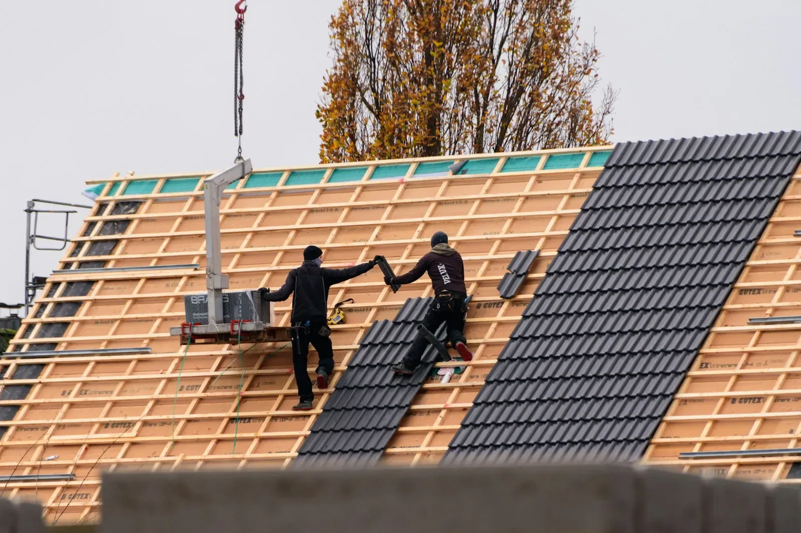

Dak en bouw samen
Een uitbouw met dak, in één planning.
Een nieuwe dakverdieping, een uitbouw achteraan of een garage die leefruimte wordt. Daar komt telkens zowel bouw- als dakwerk bij kijken.
Omdat beide bij dezelfde ploeg liggen, moet je niet wachten tot de ene aannemer klaar is voor de andere kan beginnen. Eén planning, één aanspreekpunt.
Bespreek je project